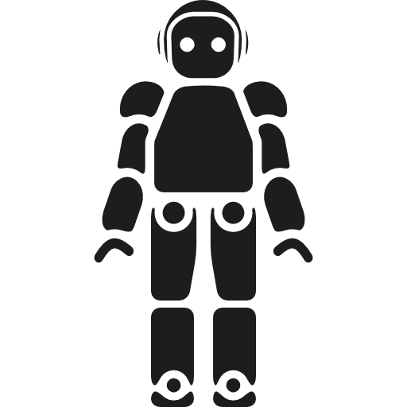

Introduction
Et s’il nous était possible de prédire exactement l’issue d’une décision de justice lors d’un litige, avant même que le procès n’ait eu lieu ? Impossible vous vous dites ? Eh bien, pas tant que ça en fait. Aujourd’hui la France, suivant l’exemple des Etats-Unis, voit se développer sur son sol de nouvelles start-up permettant aux juristes d’évaluer leurs chances de succès dans un litige. Le nom de cette nouvelle forme de justice en plein essor : la justice prédictive.
En effet, l’avènement des nouvelles technologies et notre entrée dans l’ère de l’Open Data ont permis l’émergence de la justice prédictive.
La méthode
Le thème de la justice prédictive a rapidement fait consensus au sein du groupe. En effet, nous voulions nous saisir de notre enquête numérique pour approfondir un sujet qui nous touche quotidiennement et qui se transforme à l’aune du numérique. La justice caractérisée par son égalité, son accessibilité et son indépendance est concurrencée par la mise en place de nouveaux outils numériques. En effet, la justice prédictive permet désormais de calculer les chances de succès d’un procès, les issues possibles et les arguments que peuvent avancer les juristes au cours de ce procès. Ainsi, il nous a paru judicieux d’analyser les caractéristiques de ce nouveau phénomène afin de comprendre de quelle manière il concurrence ou répond à l’idéal de justice.
La fiabilité des algorithmes
Peut-on faire confiance aux robots ?
C’est avec cette question aux allures de science-fiction mais pourtant pertinente que nous allons tout d’abord aborder le thème des algorithmes au service de la justice prédictive.
C’est en effet sur des concepts d’intelligence artificielle que se basent les principes de justice prédictive. Pour en étudier les principales caractéristiques nous nous appuierons tout au long de cette rubrique sur le logiciel de Predictice, la start-up de justice prédictive sur laquelle nous nous sommes concentrés...
La Marchandisation de la justice
« la justice, service public » : tel est l’intitulé d’un article publié en mars 2010 dans la revue Après-Demain par Elisabeth Guigou , ancienne garde des sceaux. Dans cet article, elle définit les exigences de la justice. Les juges doivent se prononcer « au seul vu de la loi » et tenir « la balance égale entre les victimes et les accusés ». De plus, la Justice doit protéger la sécurité et le respect des libertés. Elle conclut donc que la justice doit être « au service des citoyens ». Or, la justice prédictive a été mise en place par de nouvelles start-up dans une logique capitalistique. L’argent imprègne donc le sacro-saint domaine de la justice, modifiant certaines de ses caractéristiques.
Les dangers de la justice prédicive sur l'idéal de justice
Aujourd’hui deux services prétendant faire de la justice prédictive s’affrontent pour conquérir les avocats. Prédictice et cause Analytics. Le problème c’est qu’aujourd’hui beaucoup de contentieux se règlent en dehors des juridictions ce qui tend à poser la question de l’utilité actuelle de tels services. Pour autant certains cabinets jugent l’arrivée de ces services comme un premier pas vers la justice numérique. En revanche, le doute subsiste sur la capacité des machines à fournir des informations claires. En effet beaucoup de justiciables et de juristes ne connaissent pas ou n’ont que très peu confiance en ces algorithmes qui produisent des résultats.
Les citoyens sont-ils prêts à accepter la justice prédictive ?
Le sondage a été réalisé du 13 au 16 novembre 2018 via un formulaire en ligne. Il était constitué de 14 questions dont 8 à choix multiples, 5 à curseur et un champ de réponse libre.
Une possible conciliation entre « juge-robot » et « juge-humain » ?
« La justice serait trop humaine pour que l’on puisse la confier à des robots. »
Voilà ce qu’affirme Boris Barraud dans un article intitulé Un algorithme capable de prédire les décisions des juges : vers une robotisation de la justice ? Face à ce bouleversement numérique, des interrogations légitimes émergent au sein du monde juridique. D’une part, nous pouvons nous demander si le fait de juger se résume à la simple et mécanique application des différentes dispositions légales ? Le juge devrait-il seulement être la « bouche de la loi » comme le disait Montesquieu ? En effet, Themis n’a-t-elle pas les yeux bandés pour se prémunir de sa ...
